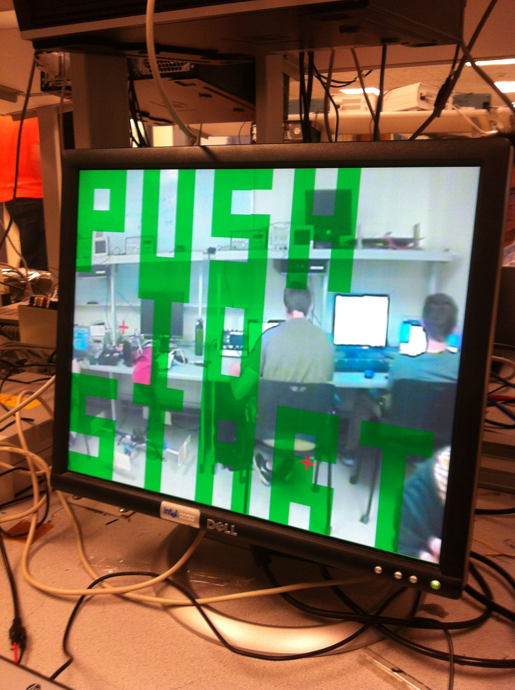
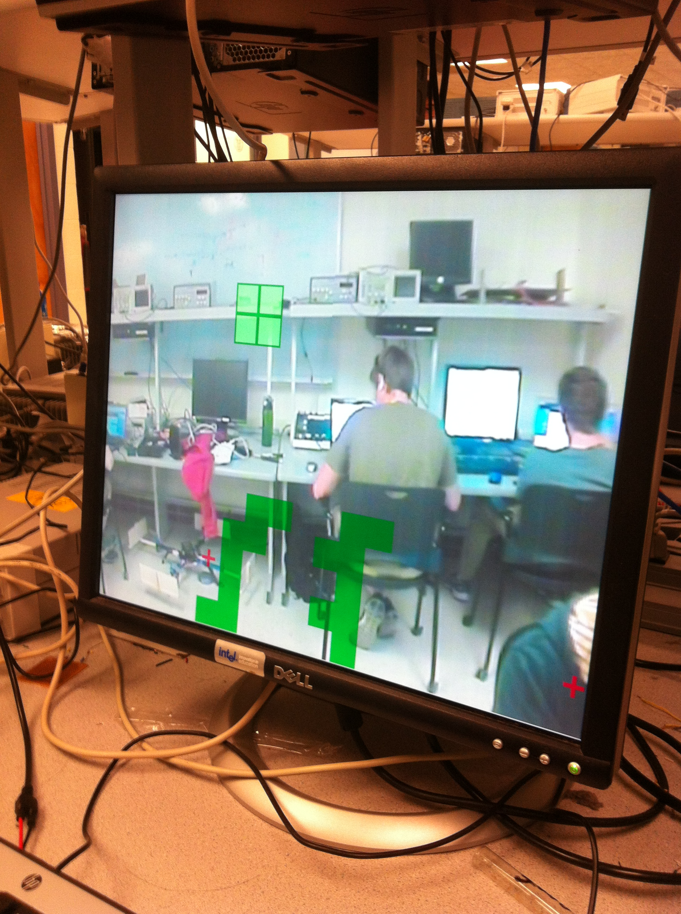

Anti Tetris
ECE 5760 Final Project
Tian Gao(tg293@cornell.edu)
s and how long the game lasts. The game screen is the combination of the real video stream and the tetris board so that the player can see how can they hit the blocks.
High Level Design
Rationale
Basically, the project could be divided into three parts: video signal decoding, hand detection and game playing. The camera provides a standard NTSC signal for FPGA and the FPGA has a hardware decoder which generates a serial digital signal. Altera has provided a solution to decode it to RGB system and display it on VGA screen. For hand detection, I first detect skin in YCbCr scale, then I track the hand by an iteration algorithm. The game is the similar as the original tetris, with the difference in width and height of the screen. Also you can't move or rotate the block, you can just eliminate it.
Video Signal Decoding
The controlling of the video game is based on hand gesture from the player, so a video camera is needed to capture the movement. The HTC video camera provides a standard NTSC signal which would be fed into video in port on DE2 board. There is a hardware NTSC decoder on board that gives out a ITU_R 656 serial signal which we can read on top module. Altera provides a solution to decode that signal to a YUV scale signal and downsample it from 720 to 640. After that it saves the output in SDRAM and then the VGA controller reads it out and transfer it to RGB scale.
Hand Detection
In the project, we need to detect hands on the screen for controlling. The basic idea is using YUV scale to filter out the skin and using a spacial average to stablize the output. There are two cursors on the screen that the player would have to put their haanti
nds on cursors first, then the cursor can tract the player's hands. Also, the program can distinguish it when the player push their hands, which is a signal for hitting the blocks.
Game Playing
The main goal of the game is to hit the tetriminos to avoid it falling down to the ground. There are two red cursors on screen indicating where your hands are. The player has to keep the cursors on his hands. The tetriminos are ramdomly falling down from the top of the screen. Once the player push his hands and the cursor is on the tetrimino, it disappears. The game would last until the top line of the screen is filled.
Hardware Design
NTSC Decoding
The NTSC decoding part of this project is from Bruce, which is an altera IP. The decoder converts the serial video signal to YUV scale and save that in DRAM. At the same time, the VGA controller constantly reads out the data that saved in DRAM. Since this is not a synchronized procedure, there are buffers for both input and output. However, the time of one frame for both reading and writing is the same, so from high level, reading and writing are synchronized. The decoder also downsamples the signal from 720 to 640 and mirrored it. The final output for VGA controller is RGB scale, but I filtered the signal in the middle of the decoder in YUV scale.
Multiple Screen
For this game, there are both game display and video output on the screen, so I used a MUX to solve the problem. I choose the YUV to RGB point to insert my logic circuit because that's the most convenient place to do my skin detection. I read the origin YUV value and then process it to generate the actual YUV signal for YUV to RGB block. As it's mentioned above, the skin information about the picture is saved in SRAM, and I used a 20*16 register for game display. The VGA_X and VGA_Y are the variables for MUX. The hand cursors has the highest priority, so if the position that VGA_X and VGA_Y determine is a cursor, it displays red. The game display has two parts: falling blocks and grounded blocks. Since it's too hard to track all the blocks as an individual module, all the grounded blocks are considered as a part of screen which would be saved in the register. Thus, we only need to track one active block. In general, the program would judge whether the pixel is cursor or filled screen or falling block, if not, put the decoded video signal directly.
Hands Detecting
Detecting hands is the most vital part in this game because that's the only controlling part. In this project, this part consists two steps.
Firstly, I try to detect all skin parts on the screen and save it on SRAM. People's skin shows an interesting feature in YUV scale that regardless of Y value, the Cb and Cr values are in a certain range, specifically, 80<cb<120 and 133<cr<173. Thus, we can detect skin in YUV scale, which is already provided in the process of decoding. However, this estimation is unstable and I can't save the result in SRAM because it's too fast. Therefore, I used a spacial average and downsampled it from 640*480 to 80*60. In this way, each big block has 16 pixels and only when there are more than 8 pixels of skin, can we consider that a skin. Also, in this way, I have four cycles for each block in a line, so I can both read and write in SRAM without losing frames.
After skin detection, I can get a binary 80*60 array in SRAM about where is the skin on screen, from which I can track the hand. I initially assume two positions for both hands on the screen. Once the actual hand is at that position, the iteration starts to track the hand. For every three frames(20 times/s), a tempory pointer goes top block by block(8 pixels * 8 pixels)from the "hand position" until the block is not skin. Then it's supposed to be the top of the hand. In same method, we can get the left, right and bottom of the hand and we can calculate the new position of hand by averaging the top/bot value and left/right value. In this way, we can constantly track the hands when it moves. To separate two hands on screen, I split the screen and the marker of the hand can't go through the middle of the screen.
Besides, we also need to distinguish the gesture "push" when the player tries to hit the falling blocks. In this case, I put the judgment in the hands position iteration. Initially it's assumed that the hand pushes. If the top position of the hand is lower than last time or the bottom position is higher than last time, the assumption is wrong, otherwise, we can say that the player pushes. This easy method may cause some false positive, but it's cheap and the false positive is not very harmful for the game.
Single Block
As we know, all tetriminos are composed of four single squares. Therefore, I designed a single square block at first. How to display a square on VGA screen efficiently is a tricky thing on verilog, so I built a module that's compatible with my structure. For this VGA_Square module, the main function is by inputing VGA_X and VGA_Y, outputing a binary signal for whether the pixel is filled. The module has three internal variables: X, Y and Speed. For every cycle(in this project, 2 frames), the Y value increases by Speed. The block can be disabled and stopped for future controlling.
Tetrimino
A tetrimino is composed of four single square, so there are four single block modules in a tetrimino module. Basically, the tetrimino module provides a similar function as the square one. However, since the tetrimimo module has to communicate with top module, there are some extra IOs in the module.
First of all, the module communicates with top module with hand shake protocol so that different frequency of clocks wouldn't be a problem. Since the tetrimino could be erased at any time, it has a reset signal that could be triggered any time to disable and reset the block.
Also, there are many types of tetriminos: seven in total without rotation, so the module has a type signal and a angle signal which can determine the shape of the tetrimino. I added an extra kind of tetrimino which is exactly the same as the square with different color. The new kind of tetrimino can erase the blocks under it when it's grounded instead of being a part of it.
As we can see, the tetrimino is falling from the top of the screen so four squares are not all visible initially. Thus, I used a state machine to manage the sequence of four squares. I set them up at the same time with minus Y values but only enable the block when it's on the first line. The state machines are different if the type/angle are different.
At last, the module has to communicate with the game display register. If the tetrimino falls onto a filled block, it should be grounded. Thus, the screen_filled register is the input of this module. However, we need to refresh the register which can't be done inside the module, so when the tetrimino falls onto the ground, the state machine in top module would update the register.
Results
For final results, I finished the game and made it pretty playable. The start menu is as follows:

The red cursors in the screen is the hand tracking target, which are not tracking anything now. Player needs to push both hand together to start the game.

The game display is like above.
The refresh rate for background, falling blocks and skin detection are different, but the slowest of them is 20Hz. Consequently, the game screen is smooth without any blinking that can be experienced by human eyes. There is no artifacts on the screen but the skin detection is a little bit unstable.
Conclusion
In the project, I designed a gesture controlled video game "Anti Tetris" on altera DE2 board with an NTSC camera. By implementing a skin detection algorithm, the game can track hands on screen and detect the push. The player is supposed to hit the falling blocks to avoid it falling down. The final score: game time and erasing numbers are displayed on board.
The game provides a good exercise opportunity because it takes efforts to keep pushing for a minute or more. Other than that, this is a safe non-distrubing quiet game for all people. For future developing, more playing option may be implemented. For example, the game could recognize the gesture of the player so the player can move or rotate the tetriminos, which would make it a real tetris game. Also, the display is not fancy at all now, it could be better.
Appendix
Code
References
http://people.ece.cornell.edu/land/courses/ece5760/
http://www.wseas.us/e-library/conferences/2011/Mexico/CEMATH/CEMATH-20.pdf
http://www.itu.int/dms_pubrec/itu-r/rec/bt/R-REC-BT.656-5-200712-I!!PDF-E.pdf